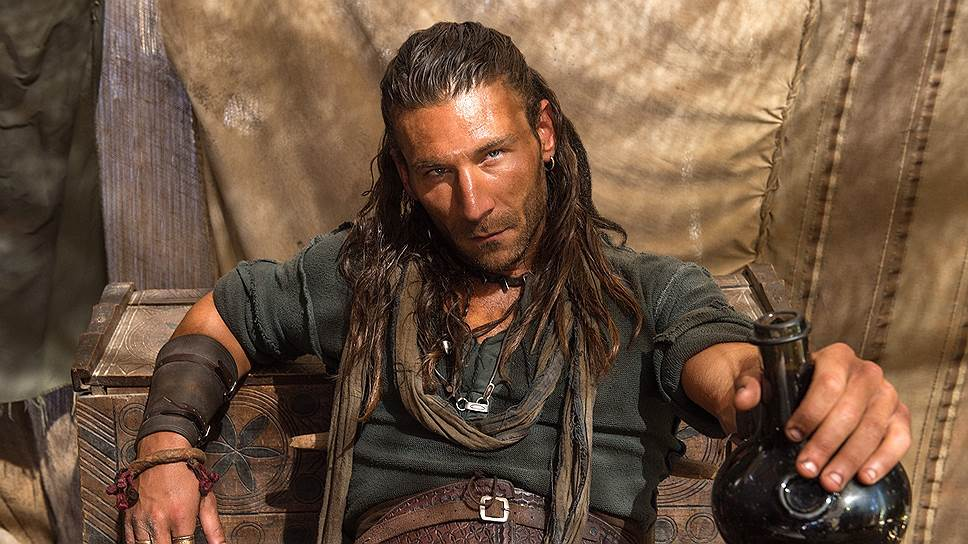

Топ 5 кринжовых анекдотов
- Самая распространенная фраза в Третьяковской галерее: «О, это же эта!»
- Робин Гуд впадал в ступор, встречая людей среднего достатка.
- Селекционер, ничего не объясняя, ускакал на подсолнухе.
- Лежащий в больнице сомалийский пират захватил чужое судно.
- В Чечню привезли шоу с крокодилами. Было ну очень страшно! Но, переборов страх, крокодилы все-таки выступили.
Обзор последнего просмотренного фильма/сериала
Сериал "Черные паруса" — это захватывающая приключенческая драма, которая погружает зрителей в мир пиратов и морских сражений. Сюжет разворачивается вокруг известных персонажей, таких как капитан Флинт, и исследует темы предательства, дружбы и борьбы за выживание в жестоком мире.
Визуально сериал шикарен. Внимание к костюмам, локациям, к каждой мелочи в каюте корабля. Все сделано детально-проработано и красиво. Очень глубокий сериал, смотрится на одном дыхании, среди всего этого огромного информационного потока действительно заслуживает внимания.
Цитаты из "Назад в будущее"
Так ты мой дядя Джои? Привыкаешь к решётке, малыш?
Когда эта крошка разгонится до 88 миль в час, ты такое увидишь…
Ночью прилетел Дарт Вейдер с планеты Вулкан и сказал мне, что если я не приглашу Лоррейн, он расплавит мне мозги.
Расписание матчей команды Брентфорд
| Дата | Время | Соперник | Счёт |
|---|---|---|---|
| 02.02.2025 | 17:00 | Тоттенхэм | 0:2 |
| 15.02.2025 | 18:00 | Вест Хэм | 0:1 |
| 21.02.2025 | 23:00 | Лестер | - |
| 26.02.2025 | 22:30 | Эвертон | - |
| 08.03.2025 | 20:30 | Астон Вилла | - |
| 15.03.2025 | 20:30 | Борнмут | - |